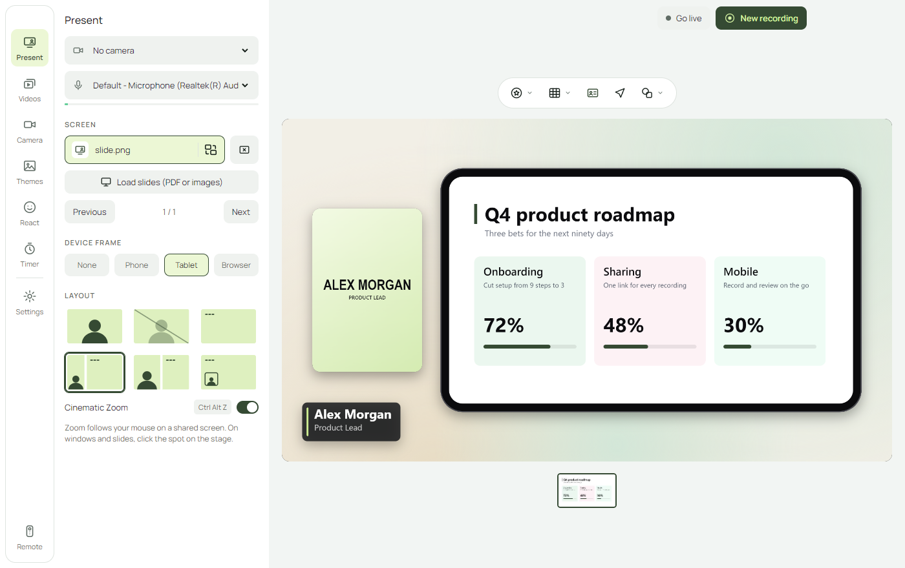
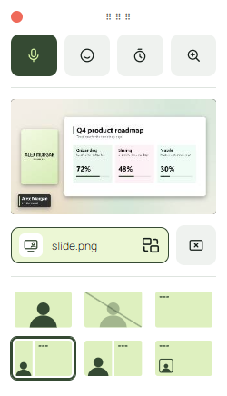
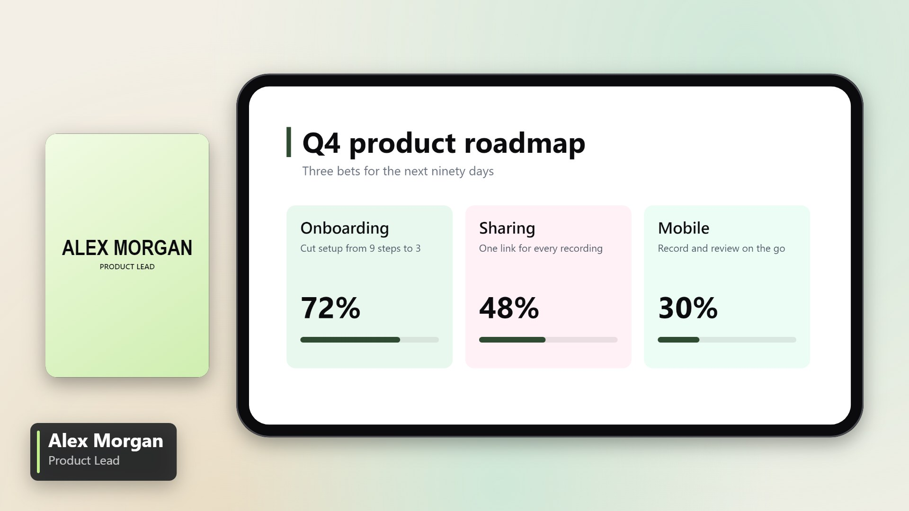

Six layouts
Camera only, screen only, side by side, split, picture in picture, and a camera-off screen. Change them mid-sentence.
Present live. Record once.
Onstage puts your camera, your screen and your brand on one stage. Switch layouts and zoom in while you talk, then stop recording and share the file. There is nothing to edit afterwards.
Windows 10 and 11. Everything runs on your computer.


Not a tiny webcam in the corner of a shared screen. A composed frame that changes as you speak.

Your camera sits beside your content, so people see you and the slide together.
The things you would normally fix in an editor are switches you flip while presenting.
Camera only, screen only, side by side, split, picture in picture, and a camera-off screen. Change them mid-sentence.
Zoom into any part of your screen with one shortcut. It eases in and out, and follows your mouse.
Blur your room, or replace it with a gradient or your own image. Add skin smoothing and studio light.
Frame the shot with zoom, pan and tilt. Tune exposure, temperature, tint and saturation on any webcam.
Backgrounds, padding, rounded corners, your logo and a name tag. Set them once and every recording matches.
Wrap what you share in a phone, tablet or browser frame. Good for app demos and walkthroughs.
Emojis, confetti and your own GIFs land on the stage and in the recording, without leaving your flow.
A countdown your audience can see. Useful for breaks, exercises and keeping yourself on time.
Recordings save to a searchable library. Trim the ends and export at 1080p, 720p or 480p.
Onstage finds you in the picture on your own computer, then lets you change what is behind you and how you are lit.
A small remote floats above your other windows, and every action has a shortcut that works while another app is in front.
Have a Stream Deck? Assign these with its Hotkey action.
Pick your camera, choose a screen, window or slides, and select a background.
Record, or press Go live and share the Onstage Live window in your call. Switch layouts and zoom as you talk.
Stop recording and the video is in your library, ready to export.
Yes. Press Go live and Onstage opens a clean window of your stage. Share that window in your call. Onstage does not yet appear in the camera list of those apps.
No. Layout changes, zooms, reactions and your branding are recorded as they happen. You can still trim the start and end before exporting.
No. Recording, background removal and export all run locally, and recordings are saved to your Videos folder. The one exception is GIF search, which contacts GIPHY only if you add your own GIPHY key.
Any screen or window, or slides loaded from a PDF or images. On Windows, sharing a screen also captures its sound.
Any webcam your computer recognises, including the one built into your laptop.
Download Onstage and present with your camera, your screen and your brand on one stage.
Download for WindowsWindows 10 and 11. The installer is not code-signed yet, so Windows may ask you to confirm: choose More info, then Run anyway.